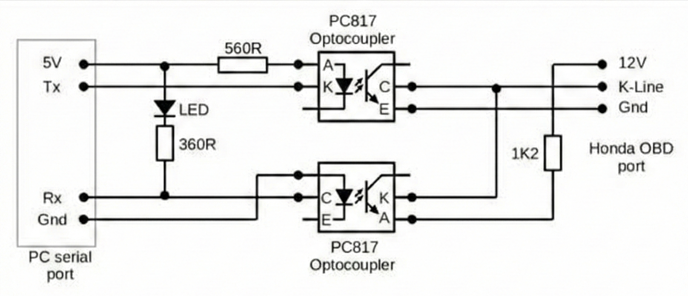
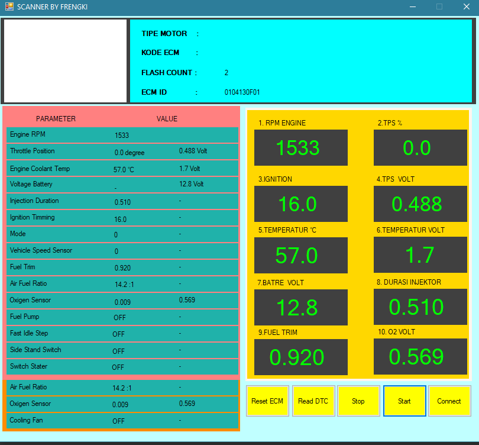
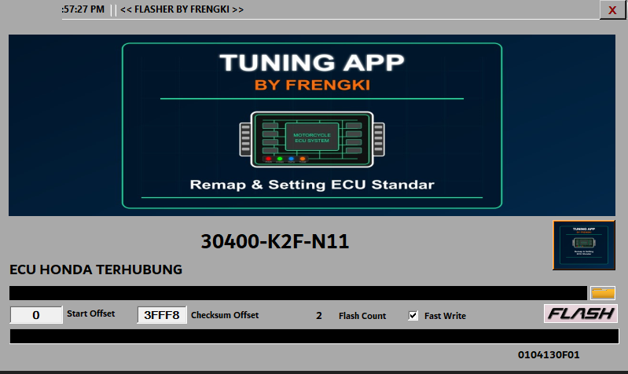
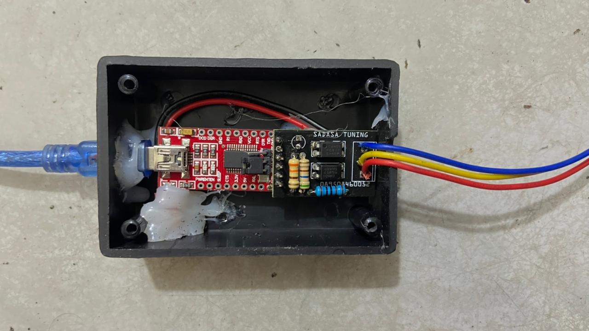
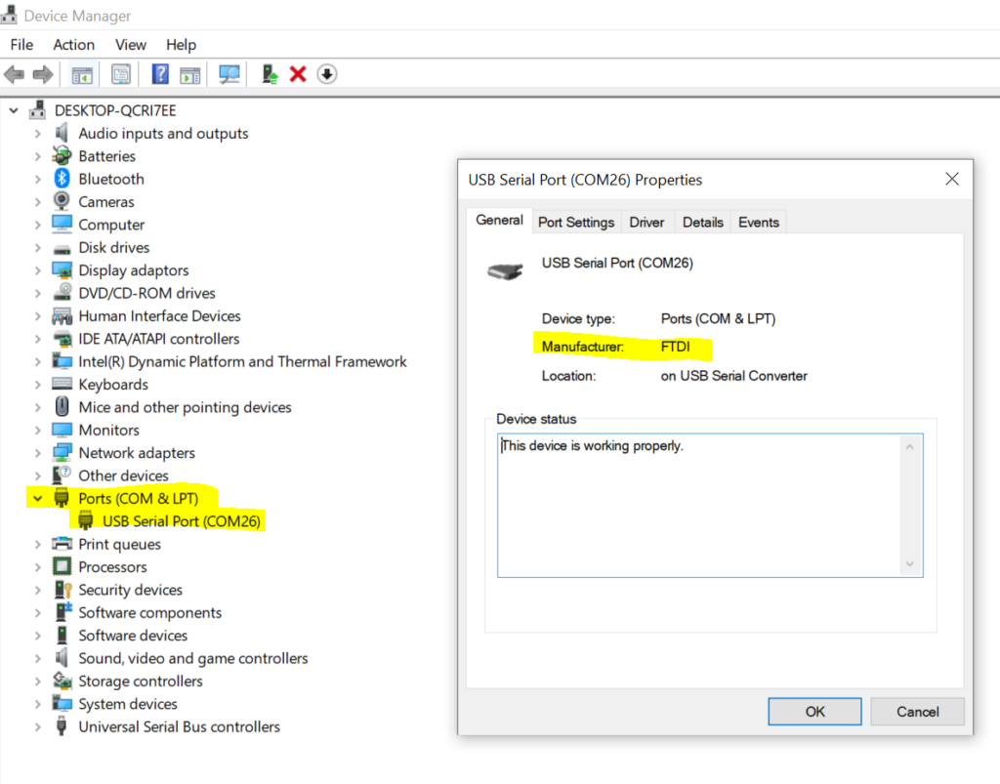
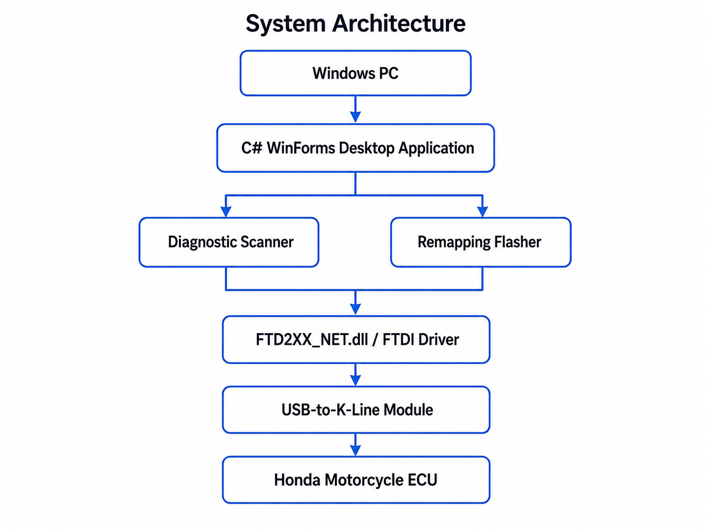

ECU Diagnostic & Remapping Tool for Honda Motorcycles
Indonesia
Aplikasi desktop Windows untuk mendukung workflow diagnostic dan remapping ECU sepeda motor Honda. Project ini menampilkan integrasi aplikasi desktop, dependency FTDI, USB-to-K-Line module, screenshot, video walkthrough, dokumentasi, dan paket aplikasi yang dapat diunduh.
English
A Windows desktop engineering application for Honda motorcycle ECU diagnostic and remapping workflow. This portfolio presents desktop software integration, FTDI dependency, USB-to-K-Line hardware connection, screenshots, walkthrough video, documentation, and a downloadable application package.
Project Overview / Ringkasan Project
Indonesia
Project ini terdiri dari dua aplikasi desktop utama: Diagnostic Scanner dan Remapping Flasher. Aplikasi berkomunikasi dengan hardware ECU melalui FTDI dan USB-to-K-Line module.
Fokus project adalah desktop engineering, hardware-software integration, driver/DLL dependency, serta workflow diagnostic/remapping yang terdokumentasi dengan jelas.
English
This project consists of two main desktop applications: a Diagnostic Scanner and a Remapping Flasher. The applications communicate with ECU-related hardware through FTDI and a USB-to-K-Line module.
The project focuses on desktop engineering, hardware-software integration, driver/DLL dependency, and a documented diagnostic/remapping workflow.
Diagnostic Scanner
Supports ECU diagnostic workflow, communication status, and diagnostic data reading.
Remapping Flasher
Supports BIN file selection, validation workflow, and controlled ECU remapping/flashing process.
Hardware Integration
Uses FTDI dependency and USB-to-K-Line interface to connect desktop software with ECU hardware.
Technology Stack / Teknologi
Language
C#
Desktop UI
Windows Forms / WinForms-style application
Runtime
.NET Framework based Windows executable
Communication
FTDI / FTD2XX_NET.dll dependency
Hardware
FTDI USB interface and USB-to-K-Line module
Target
Honda motorcycle ECU workflow
Package
Downloadable EXE/DLL portfolio package
Documentation
User guide, disclaimer, setup notes, screenshots, video
Walkthrough Video / Video Project
Video berikut menunjukkan tampilan project dan alur penggunaan secara visual. File video disimpan di video/ecu-diagnostic-remapping-walkthrough.mp4.
Screenshots / Tampilan Project
Screenshot berikut diambil dari folder screenshots/ dan digunakan untuk membantu recruiter memahami UI, arsitektur, dan integrasi hardware.




Problem / Masalah
Indonesia
Proses diagnostic dan remapping ECU membutuhkan komunikasi yang stabil antara komputer, driver, hardware interface, dan ECU. Kesalahan pada wiring, power supply, file ECU, atau komunikasi FTDI dapat menyebabkan kegagalan proses.
English
ECU diagnostic and remapping require stable communication between the computer, driver, hardware interface, and ECU. Wiring issues, unstable power, incompatible ECU files, or FTDI communication problems may cause process failure.
Objective / Tujuan
Indonesia
- Menyediakan aplikasi desktop Windows untuk workflow diagnostic ECU.
- Mendukung workflow remapping/flashing melalui aplikasi desktop terpisah.
- Mengintegrasikan aplikasi dengan dependency FTDI dan USB-to-K-Line module.
- Menyediakan dokumentasi, screenshot, video, dan paket aplikasi untuk portfolio recruiter.
English
- Provide a Windows desktop application for ECU diagnostic workflow.
- Support remapping/flashing workflow through a separate desktop application.
- Integrate the application with FTDI dependency and USB-to-K-Line module.
- Provide documentation, screenshots, video, and application package for recruiter review.
System Architecture / Arsitektur Sistem

Workflow / Alur Aplikasi
Diagnostic Scanner Flow
- Open Scanner application.
- Check FTDI device and driver readiness.
- Connect to ECU through USB-to-K-Line module.
- Read ECU diagnostic information.
- Review diagnostic status/result.
Remapping Flasher Flow
- Open Flasher application.
- Select compatible BIN file.
- Perform file validation workflow.
- Confirm hardware and power readiness.
- Run controlled remapping/flashing workflow.
- Verify result using Scanner.
Local Setup / Cara Menjalankan
Application Files
app/ ├── SCANNER BY FRENGKI.exe ├── FLASHER BY FRENGKI.exe └── FTD2XX_NET.dll
Requirements
- Windows laptop/PC.
- .NET Framework compatible runtime.
- FTDI driver.
- FTDI USB interface.
- USB-to-K-Line module.
- Compatible Honda ECU and stable 12V power for full functionality.
Download Package / Paket Aplikasi
Paket aplikasi dapat diunduh melalui tombol di bawah. Package ini berisi executable, DLL, screenshot, dokumentasi, dan data placeholder.
ecu-diagnostic-remapping/ ├── README.md ├── DISCLAIMER.md ├── index.html ├── app/ │ ├── SCANNER BY FRENGKI.exe │ ├── FLASHER BY FRENGKI.exe │ └── FTD2XX_NET.dll ├── screenshots/ ├── video/ ├── docs/ ├── data/ └── download-package/
Documentation / Dokumen Pendukung
Dokumen berikut membantu reviewer memahami project dari sisi setup, batasan, panduan penggunaan, dan keamanan.
Safety Consideration / Keamanan
Important Safety Notice
This application interacts with ECU-related hardware. Incorrect wiring, unstable power supply, incompatible ECU files, or improper flashing procedures may cause ECU malfunction or hardware damage.
- Use only with correct FTDI driver and compatible hardware.
- Do not use real ECU files without proper validation.
- Do not perform flashing without stable 12V power and correct wiring.
- Source code, original BIN/XDF files, ECU backups, checksum logic, seed/key logic, and sensitive implementation details are not included.
Result & Limitation / Hasil dan Batasan
Result
- Desktop application package prepared for recruiter review.
- Scanner and Flasher applications organized in a clean portfolio structure.
- FTDI/DLL dependency documented clearly.
- Screenshot, video, user guide, and download package included.
Limitation
- Windows-only desktop application.
- Full functionality requires ECU/FTDI/USB-to-K-Line hardware.
- No complete standalone simulation mode is provided.
- Use of flasher requires proper technical understanding and safety control.